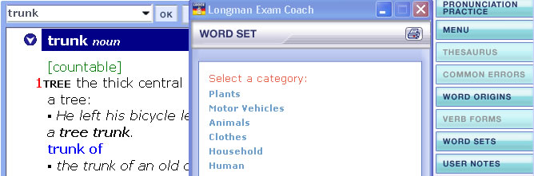
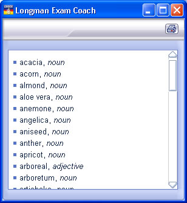

Many of the words are grouped into word sets. If a word forms part of one or more word sets you can access this or these by clicking on the word set button on the toolbar.
The word 'trunk' has several different meanings and occurs in several word sets.

The example below shows a part of the word set 'Plants'.

You can also use the subject search function to find words belonging to particular word sets.